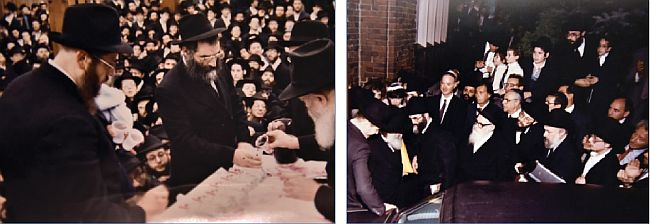

הוא התקרב לליובאוויטש כתלמיד צעיר בשנת תש”ח, אך רק בשנת תשי”ב זכה לראשונה להשתתף
הוא התקרב לליובאוויטש כתלמיד צעיר בשנת תש”ח, אך רק בשנת תשי”ב זכה לראשונה להשתתף בהתוועדות של הרבי, ובעת שנכנס וראה את הרבי, שזקן שחור עיטר את פניו ולצידו ישובים זקני החסידים - שאל בתמימות “מיהו הרבי…” * כבר קרוב ליובל שנים הוא משמש יד כסגן נשיא איגוד הרבנים ובמסכת חייו זכה לשורה ארוכה של הדרכות איש
הוא התקרב לליובאוויטש כתלמיד צעיר בשנת תש”ח, אך רק בשנת תשי”ב זכה לראשונה להשתתף בהתוועדות של הרבי, ובעת שנכנס וראה את הרבי, שזקן שחור עיטר את פניו ולצידו ישובים זקני החסידים - שאל בתמימות “מיהו הרבי…” * כבר קרוב ליובל שנים הוא משמש יד כסגן נשיא איגוד הרבנים ובמסכת חייו זכה לשורה ארוכה של הדרכות אישיות שקיבל מהרבי ביחידויות רבות ובמענות מפורטות * הרה”ח הרב נח ברנשטיין, האיש שפעל לדחיית גזירת הגיוס של אלפי תלמידי הישיבות בעת מלחמת וויאטנם, בשיחה מיוחדת ל’בית משיח’

פגשתי אותו מאות פעמים ב–770, עומד באחת מפינות הזאל ומתפלל, או יושב ליד אחד השולחנות ולומד שיעורים יומיים. מעולם לא חשבתי שמאחורי החסיד הנחבא אל הכלים, עם החיוך השותק והזקן המאפיר, מסתתרת מסכת חיים מרתקת, עם עשייה ציבורית במישורים שונים. אבל החיים, מסתבר, מלאים הפתעות.
כשישבתי בביתו שבקראון הייטס, ורפרפתי בקלסרים המתעדים את פעילותו הציבורית במהלך השנים, לצד עשרות מכתבים שזכה לקבל מהרבי מלך המשיח, הכתה בי ההכרה, שסיפור חייו של הרה”ח הרב נח ברנשטיין, הוא למעשה סיפורו של חסיד בדור השביעי - כי זה מה שתובע הרבי מכל אחד מאיתנו: גם ללמוד נגלה וחסידות, גם לעסוק בשליחות הרבי, וגם להשפיע בכל דרך אפשרית - כולל על אומות העולם.
•
מוצאו של הרב ברנשטיין ממשפחת חסידי סלונים מדורי דורות. סבו היה גבאי אצל האדמו”ר מסלונים, ואביו למד בישיבת “אהל תורה” בברנוביץ’, אצל הרב אלחנן בונים וסרמן הי”ד. בצעירותו התייתם אביו מהוריו, ואחותו הגדולה שהיגרה לארה”ב, שלחה כרטיסי הפלגה לכל בני המשפחה, וכך הגיע אביו לארה”ב זמן קצר לאחר מלחמת העולם הראשונה.
אביו המשיך את לימודיו בישיבת איסט–סייד, שנודעה אחר–כך בשם ‘ישיבה יוניברסיטי’, ולאחר שקיבל ‘סמיכה’ התמנה לרב בית כנסת בברונזוויל, שם ניהל גם תלמוד תורה.
בעקבות קשיים כלכליים העתיקה המשפחה את מגוריה לשכונת ברייטן ביטש, ושם החל אביו להתפלל בבית כנסת נוסח האריז”ל, שם כיהן הרה”ח ר’ חיים צבי קוניקוב כבעל תפילה בימים הנוראים.
נח הצעיר, למד ב’ברייטן ישיבה’, אבל אביו לא היה מרוצה וחיפש ישיבה עם יותר דגש על יראת שמים.
בקיץ תש”ח הגיע הרה”ח ר’ מענדל קונין לנופש באזור ברייטן–ביטש, שהיה אזור הנופש של הציבור החרדי בשנים ההן, והגיע להתפלל בבית הכנסת בו התפללה משפחת ברנשטיין. אביו של נח הצעיר התרשם מאוד מדמותו של הרב קונין, ושפך לפניו את לבו בדאגתו אודות יראת השמים של בנו נח. כאשר שמע מהרב קונין על ישיבת תומכי תמימים, שהייתה ממוקמת אז בצומת הרחובות בדפורד ודין, מיהר לרשום את בנו הצעיר לישיבה החב”דית, “וכך הגעתי לראשונה לליובאוויטש”, אומר הרב ברנשטיין באושר.
“במהלך השנים למדתי אצל החסידים הרה”ח ר’ אברהם פופאק, הרה”ח ר’ יצחק דוב אושפאל, הרב גורפינקל, הרב פסחוביץ, הרה”ח ר’ יהושע תנחום קסטל, הרב חיים מאיר בוקיעט, ועוד. כל אלו השרישו בלבי יראת שמים חסידית, ואבי בהחלט היה מרוצה מהמעבר”.
“אבי זכה לראותני כך רק 4 שנים, שכן בשנת תשי”ב נפטר בחטף. לעומת זאת אמי זכתה לחיות עד גיל 105 מתוך בריאות איתנה, ולרוות ממני ומיוצאי חלציי נחת יהודי חסידי.
“את אריכות ימיה קיבלה אמי בזכות הרבי, שבמהלך אחת היחידויות ברכה באריכות ימים, וגם את הנחת החסידי בזכות ברכת הרבי במכתב הבא (בתרגום חופשי מאנגלית), שקיבלה לאחר שכתבה לרבי כי הוא מודאגת מכך שאין בכוונתי ללמוד בקולג’.
ברכה ושלום!
קיבלתי את מכתבך מיום 23 בדצמבר.
בשאלת הקולג’, השקפתי בזה ידועה, ואם את רוצה תוכלי לקבל פרטים נוספים מהנהלת הישיבה, כמו גם מבנך.
הנקודה התיכונה היא, שלא צריך לעשות שום מאמץ כדי לבלבל את בנך ולבלבלו מלימוד התורה.
ובאשר למקור פרנסה ולשידוך - אינך צריכה לדאוג לכך, ושניהם יבואו בזמן הנכון, בברכת ה’, ולך יהי’ הרבה נחת ממנו, כמו גם משאר הילדים, נחת יהודי חסידי אמיתי.
התוועדות ראשונה, ויחידות ראשונה
למרות שהגיע לליובאוויטש כבר בשנת תש”ח, לא זכה לראות את הרבי הריי”צ, כיוון שהיה תלמיד צעיר. רק בשנת תשי”ב זכה לראשונה להגיע ל–770 ולהשתתף בהתוועדות של הרבי. “עדיין לא הייתי בעניינים”, אומר הרב ברנשטיין בחיוך, “עד כדי כך שכאשר נכנסתי וראיתי את הרבי, שזקן שחור עיטר את פניו ולצידו יושבים זקני החסידים - שאלתי מיהו הרבי…”.
במהלך השנים זכה הרב ברנשטיין להכנס פעמים רבות ליחידות אצל הרבי. היחידות הראשונה השמורה בזכרונו הייתה לקראת יום הולדתו ה–17. הוא עוד לא היה חסיד חב”ד במלוא מובן המילה, אבל חבריו החב”דניקים עוררו אותו להכנס ליחידות ולקבל את ברכת הרבי לקראת יום ההולדת.
“הרבי נתן לי את סדר יום ההולדת, ובין השאר הזכיר שעליי להתחיל לומר פרק י”ח בתהלים. מכיוון שלא הייתי מורגל באמירת תהלים, לא היה לי שמץ של מושג אם מדובר בפרק קצר או ארוך. חשבתי לעצמי ‘אני מקווה שזה פרק קטן’… להפתעתי הרבה, הרבי כאילו קרא את מחשבותיי, והפטיר: ‘דאס איז א גרויסער קאפיטל’ [= זהו פרק גדול]…
“יום ההולדת שלי חל בכ”ג מנחם אב. באחת הפעמים שנכנסתי ליחידות, אמר לי הרבי: מסתמא תשתתף בהתוועדות כ’ מנחם אב. תאמר ‘לחיים’, אבל אל תמתין עד שאסמן לך לומר ‘לחיים’, אלא תאמר בעצמך.
“באותן שנים למדו בישיבה גם לימודי חול עד גיל 17–18, ומכיוון שרציתי להתמקד בלימודי קודש, ביקשתי את רשות ההנהלה ללמוד רק לימודי קודש. הם שאלו על כך את הרבי, והרבי השיב להם: אם לא היה מתחיל, היה נכון יותר שלא ילמד. אבל מכיוון שכבר התחיל - שיסיים, ויקבל דיפלומה של ‘היי–סקול’.
“מכיוון שרציתי להפטר כמה שיותר מהר מלימודי החול, נרשמתי לקורסים מיוחדים בחודשי הקיץ, בהם יכולתי לקבל את הנקודות הנחוצות לדיפלומה. כך אירע, שלהתוועדות כ’ מנחם אב הגעתי ל–770 היישר מהקורס אותו למדתי. הייתי לבוש כנער אמריקאי, ללא כובע וחליפה, והתביישתי להכנס כך ל–770. נעמדתי איפוא בחצר, ליד החלון הפונה לזאל הקטן, שם ישב הרבי והתוועד. מסתבר שהרבי שם לב אליי, וכעבור כמה דקות שלח לי לעקאח ולחיים דרך החלון…”.
בהיותו בישיבה הציע לו חברו הרה”ח ר’ וועלוול קוניקוב, לפתוח גמ”ח לטובת תלמידי הישיבה. שניהם הרימו תרומה ראשונית, ואחר–כך התרימו עוד אנשים, עד שהיה בידם סכום שאיפשר להם להלוות עד 10 דולר לכל בחור, ובימים ההם היה זה סכום מכובד מאוד. כאשר דיווחו על כך לרבי, הוציא הרבי את השתתפותו בגמ”ח, בצ’ק על סך 18 דולר. למרות שבדרך כלל הסתפק הרבי בכתיבת הסכום במספרים וחתימתו, בצ’ק זה כתב הרבי את כל הפרטים בכתב ידו הק’.
כשלא מצייתים לרבי - זה משחק באש!
לאחר שסיים את חוק לימודיו בישיבת תומכי תמימים בבדפורד, עבר הרב ברנשטיין לישיבת ‘אחי תמימים’ בנוארק, ניו–ג’רסי, בראשות הרב ישראל לייב שפוץ, ולאחר שנת לימודים שם, עבר ללמוד ב’אחי תמימים’ בפיטסבורג, שם התקרב מאוד לרב אנ”ש במקום, הרב זלמן שמעון דבורקין, מי שלימים היה רבה של קהילת קראון הייטס.
לקראת שנת הלימודים הבאה הורה לו הרבי להמשיך ללמוד בפיטסבורג. בנוגע לזמן הקיץ, ביקש הרב ברנשטיין לנסוע לישיבת תומכי תמימים במונטריאל, יחד עם ידידו מרדכי צבי ברקוביץ (המוכר כיום כבעל–תפילה בימים הנוראים ב–770). הוא פנה אל מנהל ישיבת תומכי תמימים בבדפורד, הרה”ח ר’ מנחם מענדל טננבוים, שהיה ידיד קרוב למנהלי ישיבת תות”ל במונטריאל, והוא אישר לו את הנסיעה ואף סידר את כל האישורים הדרושים.
“אחרי שהתוכנית הייתה סגורה, אחד מהבעלי–בתים בפיטסבורג העלה פתאום רעיון, שתלמידי הישיבה יישארו בזמן הקיץ בפיטסבורג, וילמדו בחברותות עם בעלי–בתים מהקהילה, וכך יקרבו אותם לליובאוויטש. הצעתו העמידה אותנו בדילמה, שכן הייתה לנו תוכנית מסודרת, וכעת לא ידענו מה לעשות. שאלנו את הרב דבורקין, אולם הוא לא רצה להכריע והציע שנשאל את הרבי.
“שלחנו לרבי מכתב מהיר, ותוך זמן קצר קיבלנו את המענה הבא:
“האברך נח [ברנשטיין] ומרדכי צבי [ברקוביץ] - במענה למכתבם מהיר מט’ סיון בו כותבים סברות שונות בנוגע למקום המצאם והסתדרותם בקיץ הבא, כמובן אשר שאלה כזו צריכה לבוא מהנהלת הישיבה בה לומדים, שהרי ההנהלה מכרת ומתעניינת בהטוב לפניהם, ויכולה לברר פרטי הסברות השונות אודותם כותבים. כנראה מסיום מכתבם כבר שאלו מכבר איך להסתדר בקיץ הבא, ואם קיבלו מענה על זה הרי אין מקום לשאול שנית.
“כמובן שאחרי מענה כזה היה ברור שממשיכים בתוכנית המקורית, ונוסעים למונטריאל. לפני הנסיעה נכנסנו ליחידות, וזכינו לקבל את ברכתו של הרבי לנסיעה. בין הדברים אמר לי הרבי, שאם יבקשו ממני להדריך בקעמפ, עליי לסרב ולהמשיך ללמוד בישיבה.
“הגענו לישיבה במונטריאל, והשתלבנו בסדרי הלימודים. בגלל זמן הקיץ, חלק מהתלמידים היו בקעמפ, ואווירת הלימוד הייתה קצת חלשה, אך אנחנו השתדלנו לשמור על הסדרים. לא חלף זמן קצר, ואחד מחברי הנהלת הישיבה הגיע וביקש שאגיע לקעמפ, למלא מקום של מדריך בקעמפ.
“סירבתי כמובן, באומרי שהרבי הורה לי שלא לעזוב את הישיבה לטובת הקעמפ. הלה, שכנראה היה לחוץ למצוא מדריך לקעמפ, הביע את דעתו שלנוכח חלישות סדרי הלימוד בישיבה, בוודאי גם הרבי היה מסכים שאלך להדריך בקעמפ. מכיוון שעדיין לא הבנתי מה זה ‘רבי’, ומבחינתי זה היה כמו רב, רק רב גדול… - לכן קיבלתי את טיעוניו והלכתי לקעמפ.
“באותם ימים התנהלה בקעמפ ‘מלחמת צבעים’ בין שתי הקבוצות - יום ולילה. אני הייתי מדריך של קבוצת הלילה, ואחד הרעיונות שביצענו, היה השאת המשואות, כמו שהיה בזמן שקידשו את החודש ובית הדין היה משתמשים במשואות כדי להודיע על קידוש החודש. לקחתי מקל ארוך, עטפתי את קצהו בסחבות, וניסיתי להדליק את הלפיד. לאחר שהסחבות סירבו להדלק, הגיע אחד החברים והתיז עליהם נפט. כעת נדלק הלפיד במהירות, אלא שיחד איתו נדלקו גם בגדיי… בניסי ניסים הצלחתי להתגלגל במהירות על הרצפה ולהנצל מכוויות קשות, אבל מייד הבנתי שאי–הציות להוראת הרבי זהו ממש משחק באש, ועוד באותו יום עזבתי את הקעמפ וחזרתי לישיבה.
“למדתי בדרך הקשה, אבל מאז והלאה ידעתי שכאשר הרבי אומר משהו, צריכים לציית להוראותיו בדיוק מירבי, בלי שום קונצים”.
הסיפור שאירע בקעמפ במונטריאל, מזכיר לרב ברנשטיין מעשה שאירע כמה שנים קודם לכן: עד תשט”ז, השנה בה נפתח לראשונה הקעמפ החב”די ‘גן ישראל’, היו חסידי חב”ד שולחים את ילדיהם ל’קעמפ ישיבה’. גם הרב ברנשטיין עבד שם כמדריך. בשנת תשט”ז, שאלו הרבי ביחידות מדוע אינו מדריך ב’גן ישראל’, והוא אמר לרבי כי בשנה שעברה עבד אצלם כיוון שלא היה קעמפ חב”די, וכבר בסיום הקעמפ בשנה שעברה סיכמו על המשך העבודה בשנה הבאה.
אמר לו הרבי: ברצוני שתקח את היום החופשי שלך, ותהיה האורח שלנו בקעמפ גן ישראל. לאחר מכן תכתוב דו”ח על כל מה שראית.
כמובן שבשנה הבאה ידע הרב ברנשטיין מהו רצונו של הרבי, ונרשם כמדריך בקעמפ גן ישראל.
המעלה בחתונה שנערכת בניו–יורק
לאחר שנתיים בפיטסבורג, חזר הרב ברנשטיין ללמוד ב’בית חיינו’. כאשר הגיע לגיל 24, שאל את הרבי ביחידות יום ההולדת, אם להתחיל לשמוע שידוכים, והרבי לא התייחס לשאלה הזאת. כעבור שנה, ביום הולדתו ה–25, כאשר שאל שוב, נענה הרבי ואמר: אתה עדיין צעיר… רק ביום ההולדת ה–26, כאשר שאל בפעם השלישית, נענה הרבי ואמר: עדיין אין צורך לחפש, אבל אם יגיעו אליך בהצעות - תחשוב על זה. באותה יחידות בירך אותו הרבי שבשנה זו יהיה חתן.
“כפי שהרבי בירך אותי, באותה שנה קיבלתי את הצעת השידוך עם רעייתי מרת איידלא, בתו של הרה”ח ר’ מאיר אבצן, ששימש כשד”ר אדמו”ר הריי”צ ברוסיה, ובבואו לארצות הברית פעל למען הפצת היהדות בקרב יוצאי רוסיה בדטרויט.
“לאחר שנפגשנו, הבנתי מדוע דחה אותי הרבי בשנים הקודמות, שכן רק באותה שנה הגיעה כלתי לגיל 18…”.
הורי הכלה ביקשו לערוך את החתונה בדטרויט, מקום מגורי הכלה, גם בגלל שהיו משפחה ברוכת ילדים והיה קשה מהם להיטלטל לניו–יורק עם כל הילדים הקטנים. הרב ברנשטיין, שבאותה תקופה כבר שימש כרב בית כנסת “אנשי פולין” בקוני איילנד, וגם ניהל עסק קטן - העדיף לערוך את החתונה בניו–יורק, ולא לעזוב את קהילתו ועסקיו לכל תקופת החתונה.
כאשר נכנס ליחידות לפני החתונה, שאלו הרבי היכן תתקיים החתונה. הרב ברנשטיין - שחשב כי הרבי רוצה לומר שעליו לעשות כבקשת צד הכלה - השיב לרבי שההזמנות טרם נדפסו, ואם הרבי יורה שהחתונה תתקיים בדטרויט, אפשר לקבוע כך. להפתעתו אמר הרבי: יש הרבה מעלות לערוך את החתונה כאן, ואחת מהן - שביום החתונה אפשר להיות על הציון של השווער (הרבי הריי”צ).
באותה תקופה, הייתה באחד מאתרי הנופש החרדיים חנות למוצרי מזון, ובעל הבית של החנות ביקש למכור לו את החנות במחיר טוב. הרב ברנשטיין שאל על כך את הרבי, וקיבל את המענה הבא:
ולמה עזב [כנראה הכוונה לבעל–הבית הקודם של החנות] בשנה זו?
היש שם supermarket ?
כמדומה שמעולם לא עסק בכהנ”ל, וה”ז עסק מסובך (לקנות, לקבוע המחירים, סוג הסחורות שצריך לקנות וכמה מכאו”א [= מכל אחד ואחד], למכור, להתידד עם הקאסטאמערס ע”פ [= על פי] השערה, פובליסיטי [= פרסומת] - ועוד ועוד) ומי (ומתי) - ילמדו אותו כ”ז [= כל זה]? ובטח ב’–ג’ אנשים תמידים - מוכרח לנהל כ”ז.
‘זה רכב, וזה רכב’…
בהתאם להוראת הרבי למד הרב ברנשטיין סמיכה לרבנות ומונה לרב בית הכנסת “אנשי פולין”. במסגרת עבודתו הרוחנית עם הקהילה, היה עורך ‘עונג שבת’, בהשתתפות קרוב ל–400 איש בכל ליל שבת. כאשר כתב על כך לרבי, וציין תוך כדי אודות עניין מסויים שהדאיג אותו, ענה הרבי על מכתבו: ת”ח [= תשואות חן] על הבשו”ט [= הבשורות טובות]. בטח יוכר מהנ”ל, שאין כל יסוד לדאגותיו שבעבר, וימשיך בענייניו מתוך מנוחה, שמחה וטוב לבב.
במקביל פתח עסק להשכרת רכבים. באותה תקופה, הרבנית חיה מושקא הייתה צריכה להכניס את הרכב שלה לתיקון, ושכרה ממנו רכב לחודש ימים. “למרות שנתתי לרבנית את הרכב הטוב ביותר שהיה ברשותי, הוא לא היה באותה רמה של הקאדילק. אך שמעתי מהרה”ח ר’ שלום דובער גאנזבורג, שהרבי התבטא אז לפני הרבנית ‘זה רכב, וזה רכב’…”.
בשנים ההן החלו בבניית מקווה חדשה בשכונת מגוריו, ברייטן–ביטש, ולאחר שהפרוייקט נתקע, נכנס הרב ברנשטיין לעובי הקורה והחל לקדם את הבנייה בצורה משמעותית. חברי הקהילה הציעו לו להיכנס לניהול המקווה תמורת משכורת מהקהילה, ולאחר ששאל על כך את הרבי, נענה:
1) באם משער (ובפרט אם כבר הי’ לו נסיון בזה) שמסוגל לעבודת הנ”ל - יקבל ההצעה בשטומו”צ [= בשעה טובה ומוצלחת]. אזכיר עה”צ.
2) עד שיתבסס במשרה החדשה - יש לאחוז (אנהאלטן) בפרנסתו דע”ע [= דעד עתה], באופן ומדה האפשריים.
3) באם יצליח במשרה החדשה - צ”ע [= צריך עיון] אם יהי’ זמנו פנוי לנהל העסק דע”ע כפי הדרוש (ובפרט באם ירחיבו). ולכן קודם שירחיבו - יברר זה (ואפשר שימצא עוזר שיוכל לסמוך עליו והוא רק ישגיח וכו’).
תקופה קצרה לאחר חתונתו נכנסו חברות גדולות לענף השכרת הרכבים, והציעו מחירים כל כך זולים, שלא היה שווה לו להמשיך להחזיק בעסק. הוא סגר את העסק, והצליח לקבל משרה ממשלתית בעיריית ניו–יורק. כך היה מסודר מבחינה כלכלית, ובתחום הרוחני עסק עם אנשי קהילתו.
הרבי על השליחות בדולותה: ‘הקב”ה שמח מפעולותך שם’
הרב ברנשטיין חשב שהגיע אל המנוחה והנחלה בחייו הפרטיים, אלא שאז הגיע אליו הרב משה פעלער, שליח הרבי מלך המשיח למינסוטה, והציע לזוג הצעיר לצאת לשליחות בקהילה היהודית בעיר דולותה בצפון מדינת מינסוטה. הרב ברנשטיין שאל את הרבי, ולא קיבל תשובה. למרות זאת המשיך הרב פעלער לדחוק בו, והציע שיבוא רק לתקופה קצרה, ואם אחר–כך יחליט לעזוב - ייפתח כבר הפתח לשלוח לקהילה חסידי חב”ד.
בסופו של דבר נענה הרב ברנשטיין להפצרותיו של הרב פעלער, והביע את הסכמתו. לאחר שכתב לרבי על החלטתו, קיבל את מענה הרבי: ויהא בשטומו”צ (ע”פ התייעצות עם כאלו שיודעים וראו חוזה כיו”ב [)]. בהמשך זכה להכנס ליחידות לקראת הנסיעה.
“במהלך היחידות דיבר איתי הרבי על אופיים של אנשי המקום, ואמר ‘עליך להפוך את המקום ל’ארץ ישראל’. אני, שידעתי עד כמה רחוקים האנשים שם מלהיות בדרגת ‘ארץ ישראל’, חשבתי לעצמי: איך אוכל לבצע זאת… והרבי, כמו קרא את מחשבותיי, הפטיר: לכל הפחות קרוב ל’ארץ ישראל’…
“ברכותיו של הרבי ירדו על קרקע פורייה, שכן הייתה זו תקופת מלחמת ששת הימים, ובעקבות הניסים הגדולים נרשמה התעוררות גדולה בכל תפוצות ישראל, וגם אנשי הקהילה בדולותה התעוררו מאוד.
“ברוך ה’ הייתה לנו הצלחה גדולה במקום. אשתי, שהייתה עם ניסיון–שליחות מפעילותה לפני החתונה בדטרויט, הפעילה בית ספר יהודי, ואף העבירה תוכנית ליהדות ברדיו המקומי. ויחד הרמנו את המצב הרוחני של הקהילה.
הרבי: לכבוש את הוועידה בוושינגטון
במקביל לפעילותו עם חברי הקהילה היהודית, נכנס הרב ברנשטיין גם לעסקנות הציבורית באזורו, והתחבב על אנשי הממשל שביקשו ממנו להיות חבר בכמה וועדות ממשלתיות, ביניהם הוועדה לזכויות האדם. הוא קיבל את הצעתם, וכך חרגה השפעתו מעבר לקהילה היהודית.
כך למשל בתקופת מלחמת וויאטנם, כאשר הוכרז על גיוס חובה בארצות הברית, וביקשו לגייס גם את תלמידי הישיבות, נפגש הרב ברנשטיין עם ידידו חבר הקונגרס מר בלטניק, שהיה ראש וועדה בקונגרס שעסקה בנושא, והצליח לדחות את גזירת הגיוס.
בשנת תש”ל התקיימה וועידה עולמית לקידום החינוך. הרב ברנשטיין הוזמן להשתתף בוועידה, בתור רב הקהילה. לאחר ששאל על כך את הרבי, קיבל את המענה הברור: ההשתתפות בוואשינגטאן conference [= וועידה] נחוצה וטובה במאד מאד, ומהמזכירות ימסרו לו הידוע כאן עד”ז [= על דבר זה] - ובטח יתדבר עם שאר המשתתפים שי’ מאנ”ש ואח”כ [= ואחר כך] עם עוד ויכבשו כולם יחד את ה–conference וכו’.
גם הרב משה פעלער הוזמן לוועידה, ומשיחותיו עם מזכירות נודע לרב ברנשטיין כי בוועידה ישתתפו גם האחים הרבנים העסקנים הרב אברהם והרב יעקב יהודה העכט, הרב אברהם שמטוב, הרב דוד הולנדר, חבר אגודת הרבנים דארצות הברית וקנדה, והרב ניסן מינדל, מזכירו של הרבי.
על קורות הוועידה מספר הרב ברנשטיין:
“מהמזכירות אמרו לנו כי הרבי רוצה שבכל יום נתאסף כדי לתאם עמדות ולסכם על דרכי פעולה במהלך הוועידה, וכן נתקשר למזכירות לדווח לרבי מה הצלחנו לפעול. במהלך היום היה כל אחד בסדנא אחרת, ופעם ביום התאספנו, ודיווחנו לרבי.
“ברוך ה’, הייתה הצלחה גדולה וחלק גדול מהמסרים שביקשנו להעביר, צוטטו בכלי התקשורת וזכו לתפוצה רחבה.
“בוועידה השתתפו 4 אלף איש, בסדנאות שונות, אבל ביום האחרון היה דיון פתוח בהשתתפות כל באי הוועידה, וכל אחד שרצה לדבר היה צריך להגיש בקשה. הגשתי בקשה, ואכן אישרו לי לדבר בפני כל באי הוועידה. אולם זמן קצר לפני שהגיע תורי, אמר לי המנחה שאני הולך להיות המרצה האחרון… המרצה הבא אחריי, היה אמור להיות הרב דוד הולנדר. מכיוון שהוא נואם בחסד עליון, ואף היה מורי ורבי בישיבה בבדפורד - חשבתי לעצמי שאין זה מן הראוי שאני אדבר והוא יפסיד את תורו. ביקשתי איפוא מהמנחה לאפשר לרב הולדנר לדבר במקומי. המנחה הסכים, ואני אמרתי לרב הולנדר את עיקרי הדברים שבקשתי להעביר, ואכן הוא העביר זאת בצורה המוצלחת ביותר.
“לאחר הדיון הפתוח, התאספנו כולנו והתקשרנו למזכירות. הרב הולנדר החל לדווח על אירועי היום, ואז לפתע ביקש הרבי לדבר איתי, והורה לי להעביר את הדיווח.
‘לחיים’ עבור ילדי ה’פאבליק סקול’
“בחזרה מהוועידה נחתנו היישר להתוועדות י”ט כסלו אצל הרבי. בעיצומו של ניגון “אנא עבדא”, הביט הרבי לכיווני והורה לי לומר ‘לחיים’. לא חשבתי לרגע שהרבי מתכוון אליי, והסתכלתי לימיני ולשמאלי, כדי לגלות למי הרבי מורה לומר ‘לחיים’. אבל הרבי המשיך להסתכל עליי, ולסמן לי לומר ‘לחיים’, עד שהבנתי והרמתי את כוסית ה’לחיים’.
“מכיוון שבבוקרו של אותו יום, בוועידת החינוך, עמלתי רבות לשכנע משתתפים אחרים בוועידה, שצריכים לבטל את החוק האוסר על תפילה בבתי הספר הממלכתיים - החלטתי לבקש ברכה עבור העניין הזה, וכאשר הרמתי את כוסית המשקה אמרתי: ‘לחיים! עבור כל הילדים שלא מאפשרים להם להתפלל לקב”ה’.
הרבי האזין לדבריי, והגיב בשאלה: ‘כך צעקת בוושינגטון?’.
לאחר שנעניתי בחיוב, שאל הרבי שוב: באמת? אמרתי: כן! והרבי נענה בשביעות רצון: זהו דבר נכון.
אמרתי לרבי שמי שהדריך אותי בוושינגטון, היו האחים החסידים הרב אברהם והרב יעקב יהודה העכט. והרבי אמר: שיאמרו ‘לחיים’!
הרב אברהם העכט, שהיה באולם ההתוועדות, אמר מייד ‘לחיים’, ואילו אחיו הרב יעקב יהודה, שהיה מתרגם את שיחותיו של הרבי בשידור החי - היה בחדר השידורים. הרבי שאל: איפוא ג’יי ג’יי העכט? תוך שהוא משתמש בכינוי האמריקאי של הרב העכט, והדבר העלה חיוך על שפתי כולם… הרב העכט ששמע את הרבי מחדר השידורים, מיהר להגיע לזאל ואמר לרבי: הנני! פנה הרבי לשני האחים, ואמר: ראו גידולים שגידלתם!
התמונות והדיווחים על שולחנו של הרבי
כעבור שנתיים התקיימה שוב וועידה דומה, אך הפעם הייתי החב”דניק היחיד שהוזמן לוועידה. חשבתי אז, שזכיתי לכך משום שבוועידה הקודמת וויתרתי על נאומי לטובת הרב הולנדר.
ואכן, בוועידה הזאת קיבלתי את ההזדמנות לנאום בפני כל באי הוועידה, אלפי אנשים מכל רחבי העולם. ניצלתי את ההזדמנות לדבר על הצורך לבסס את החינוך על האמונה בקב”ה. אחד הנושאים העיקרים היה חינוך הצעירים לכבד את המבוגרים. אמרתי, שבאמריקה יש רק שני ימים בשנה שהילדים מכבדים את הוריהם - יום האב ויום האם… אבל כאשר יבינו שצריכים לכבד בגלל ציווי הקב”ה, יכבדו את הוריהם 365 יום בשנה.
הדברים התקבלו בהתלהבות גדולה, ואף דווחו בהרחבה בעיתונות, וכן בפרסומי הוועידה. אחר–כך, כאשר הכנסתי את כל הדיווחים והתמונות אל הרבי, השאיר הרבי את המעטפה על שולחנו זמן רב. כאשר שאלתי את המזכיר הרב קליין אם אוכל לקבל את התמונות, אמר לי שהן מונחות על שולחנו של הרבי. רק לאחר ששה חודשים, הוציא הרבי את התמונות, וקיבלתי אותן מהמזכיר.
בשליחות לארץ ישראל, לתיקון חוק ‘מיהו יהודי’
כרב בקהילה אמריקאית טיפוסית, חש הרב ברנשטיין במלוא העוצמה את הנזק שחולל חוק מיהו יהודי, וכיצד גרם להאצת ההתבוללות. צעירים יהודיים אמרו לעצמם: אם בארץ ישראל הנערה הזאת תחשב ליהודייה, מדוע שלא נתחתן איתה?…
באותה תקופה מונה הרב ברנשטיין לסגן נשיא איגוד הרבנים, ונסע יחד עם משלחת רבנים לארץ ישראל, כדי להסביר לראשי המדינה את הסכנה הגדולה בחוק ‘מיהו יהודי’, והצורך הדחוף לתקנו.
בהוראת הרבי נפגש במהלך המסע עם הפרזידנט מר שז”ר, יחד עם הרב זלמן פוזנר, ומסר הרצאה מפורטת על השפעתו ההרסנית של חוק מיהו יהודי.
“כאשר משיח יבוא, יודיעו לך שם!”
כאמור, הרב ברנשטיין הגיע תחילה לתקופה קצרה בלבד לדולותה. אחר–כך הסכים להשאר לשנה שלימה, אך בחלוף השנה ביקש לחזור, שכן אם טרם חלפה שנה מאז עזב את עבודתו בעירייה - הוא יכול לקבל שוב את משרתו.
“כאשר שאלתי את הרבי ביחידות מה עליי לעשות, אמר לי הרבי: הקב”ה שמח מפעולותיך שם, ואל תחזור בינתיים.
“אמרתי לרבי, שכלל לא חלמתי שתעבור שנה ועדיין נהיה שם, כיוון שלאור ההתעוררות הגדולה בעקבות מלחמת ששת הימים, הייתי בטוח שמשיח יבוא וייקח אותנו משם. הרבי הגיב ואמר: כאשר משיח יבוא, יודיעו לך שם!
“לאור מענה הרבי, המשכנו לפעול שם, עד שכעבור חמש שנים החליטו חברי הקהילה שצריכים לאפשר לנשים להתפלל בבית הכנסת עצמו, ולא בקומה השניה כפי שהיה עד אז, וללא מחיצה. עמדתי בתוקף על כך שחייבים מחיצה, ולאחר שהם התעקשו על התפילה המעורבת, לא הייתה לי ברירה אלא לאיים כי אעזוב את משרתי כרב הקהילה. במקביל, כתבתי לרבי שאם הרבי יורה לי להשאר בעיר - אשאר שם. בסופו של דבר הם לא שינו את דעתם, והרבי הורה לי לחזור”.
[יותר מעשור אחר–כך, ערכה הקהילה כנס מיוחד לאנשים שהתגוררו בקהילה בשנים האחרונות, ובין השאר הזמינו את הרב ברנשטיין. הוא נענה להזמנה, וניצל את ההזדמנות להדפיס תניא במקום. כעבור זמן קצר הדפיסו את מהדורת האלף של התניא, ובהוראת הרבי הדפיסו בסוף התניא צילומי המהדורות השונות ברחבי העולם. בעמוד 770 מופיע צילום עמוד השער של התניא שנדפסה ב”דולוטה, מיניעסאטא”].
במכתב כללי–פרטי שקיבל מהרבי זמן קצר לאחר חזרתו לניו–יורק, הוסיף הרבי לפני חתימתו: בברכה להסתדרות טובה בקרוב.
זמן קצר אחר–כך קיבל הרב ברנשטיין הצעה להמשיך לפעול בתחום הרוחני כרב קהילת “בית מדרש הגדול” בוואשינגטון הייטס. הוא קיבל את ההצעה, בהתאם להוראת הרבי אליו שיעסוק ברבנות. במקביל להנהגת הקהילה, קיבל משרה בכירה במערכת הכשרות של ‘קהל עדת ישורון’ תחת הנהגתו של הרב יוסף ברויאר.
כאשר כתב לרבי על הצעת העבודה, ענה לו הרבי: לקבל כיוון שאין הצעה טובה יותר - ג”ז [= גם זו] טובה. כאשר נכנס ליחידות, נתן לו הרבי כמה הוראות בנוגע לעבודתו. בין השאר אמר לו הרבי, שהקהילה הזאת הביאה איתה מפרנקפורט כל מיני מנהגים, ושלא יאמץ את מנהגיהם.
לאחר 21 שנה, מערכת הכשרות שלהם סגרה את מחלקת הבשר, וכך נותר הרב ברנשטיין ללא עבודה. היה זה לאחר ג’ תמוז, והוא התהלך במצב רוח קודר. לפתע עצר אותו מישהו ברחוב וסיפר כי קנה ספר ומצא בתוכו כמה מכתבים מקוריים של הרבי והרבי הריי”צ. הוא הציע למכור לו את המכתבים תמורת 250 דולר למכתב.
הרב ברנשטיין רכש את המכתבים, וכאשר התבונן בהם ראה כי בכמה מהם מורה הרבי להוסיף בקביעות עיתים לתורה. הוא חש כי זוהי הוראה עכשווית עבורו מהרבי, ככלי לברכה. הוא אכן הוסיף שיעור חסידות שבועי, ותוך זמן קצר קיבל הצעת עבודה מממשלת מדינת ניו–יורק, להיות מפקח כשרות.
מדינת ניו–יורק לא נותנת הכשרים כמובן, אבל כחלק ממלחמת הרשויות נגד הונאת הצרכנים - יש גם פקחי כשרות, שיכולים לקנוס מסעדה וכדומה, שמציגים את עצמם כשרים, בלי שיהיה להם הכשר מוסמך.
כך, בזכות ההוספה בלימוד התורה בהוראת הרבי, זכה הרב ברנשטיין לעבודה מכובדת, עם שליחות בעולם הכשרות.
לאחרונה פרש הרב ברנשטיין ממשרתו בשירות המדינה, ויצא לפנסיה. את זמנו הפנוי הוא מקדיש למסירת שיעורים, וכן לפעילות עניפה במבצעי הקודש של הרבי. את תפקידו כסגן נשיא איגוד הרבנים - תפקיד אותו הוא ממלא קרוב לחמישים שנה - הוא מנצל לניהול מלחמת היהדות בנושאים שונים.
בטרם יצאנו מביתו, נתן לנו הרב ברנשטיין להציץ בשורה של קלסרים המרכזים את פעילותו, גם בשנים האחרונות, לקידום הרעיון של הרבי אודות “רגע של שתיקה” בבתי הספר העממיים בארה”ב. “זוהי עבודה רבת שנים, ויש גם לא מעט הצלחות”, הוא אומר, “אך את זה נשאיר להזדמנות אחרת…”.